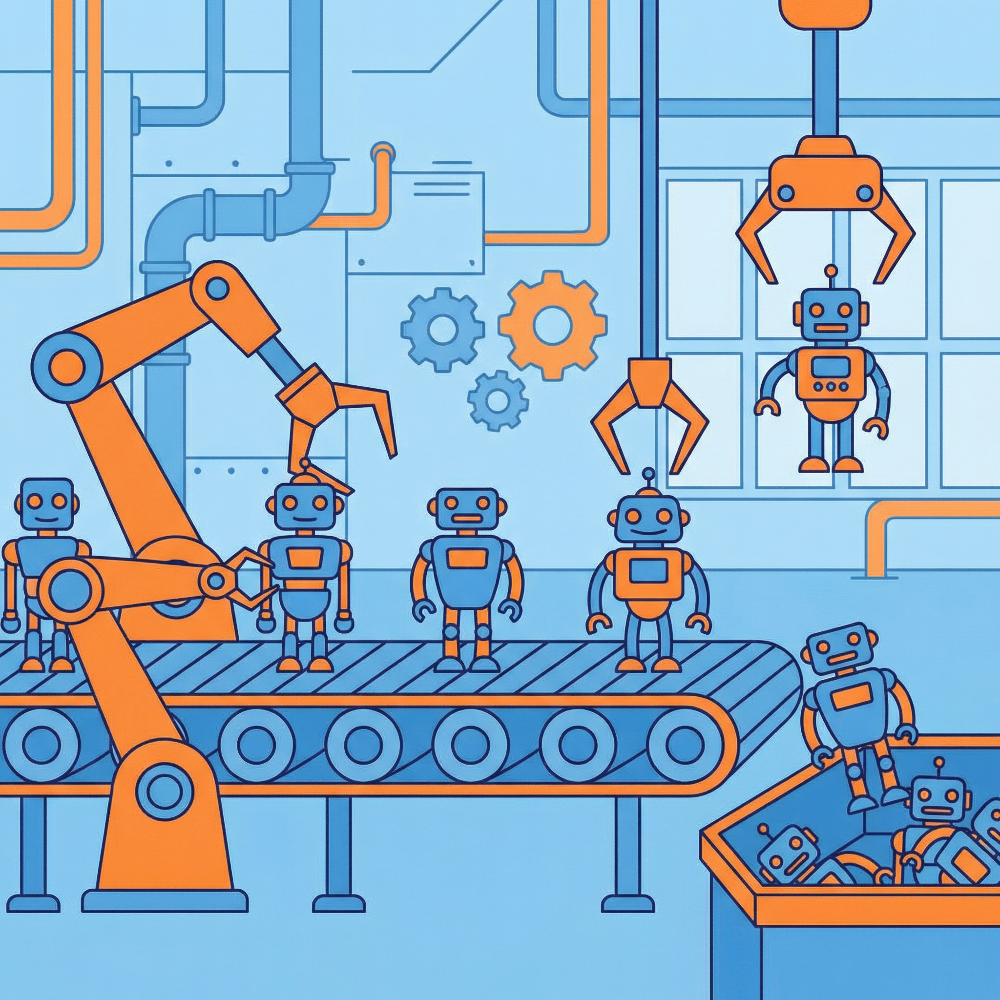
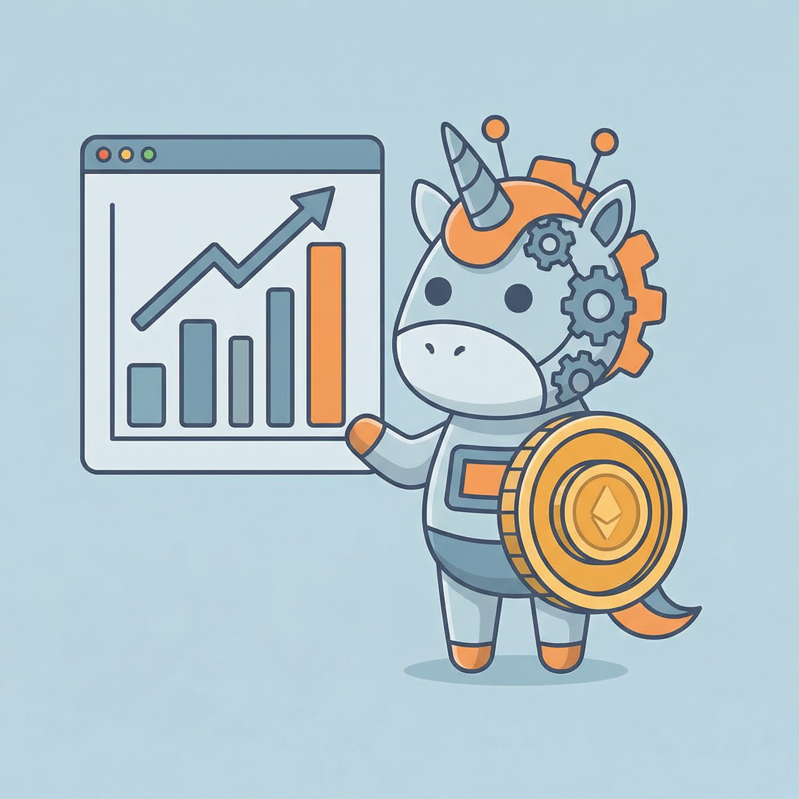
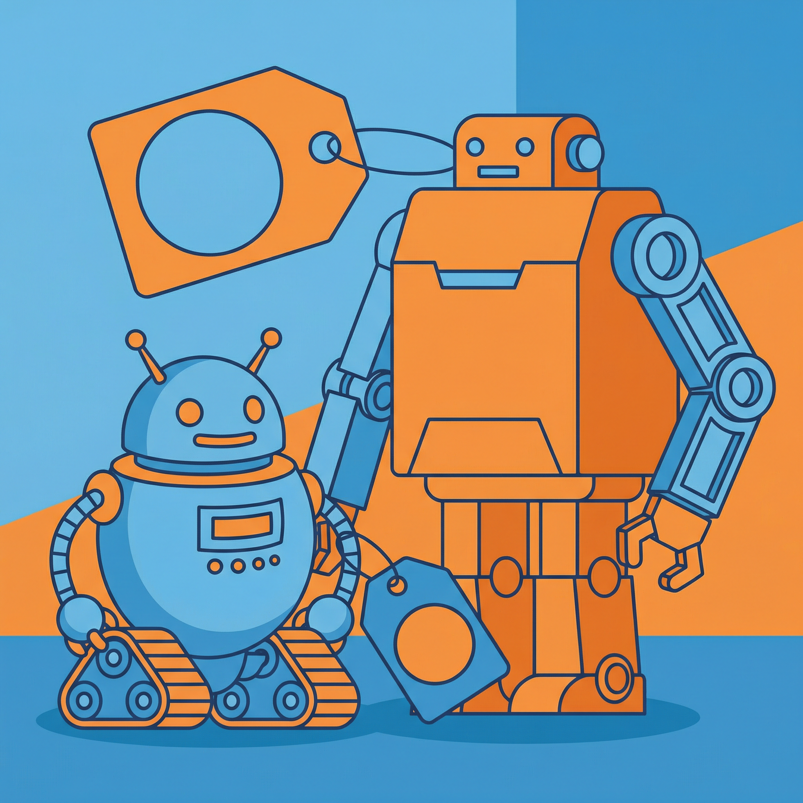
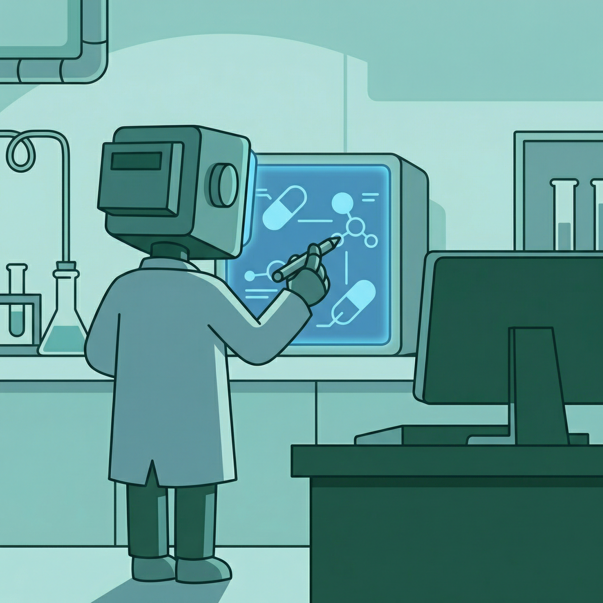
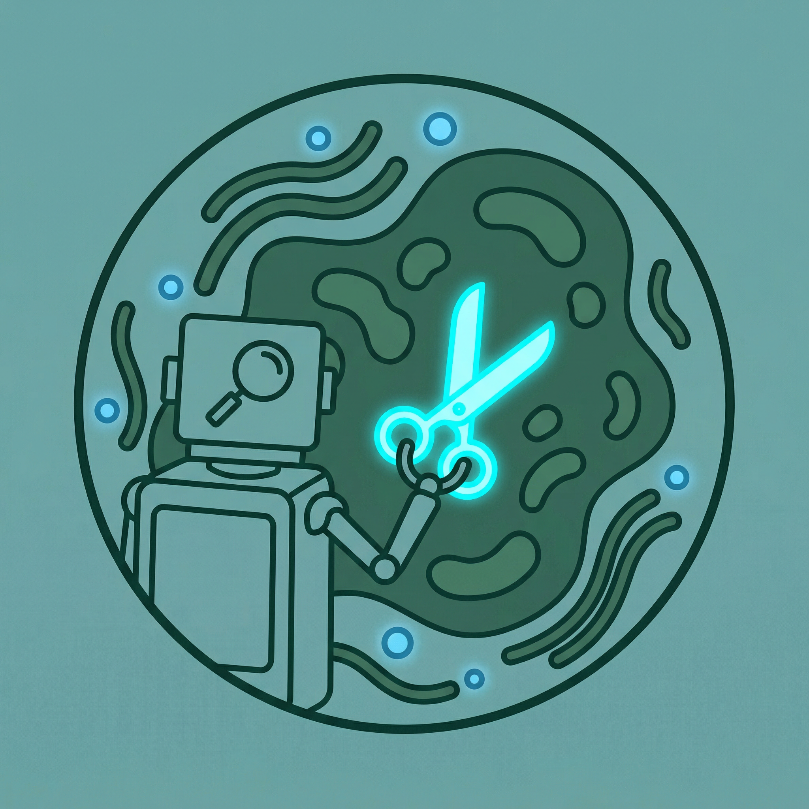
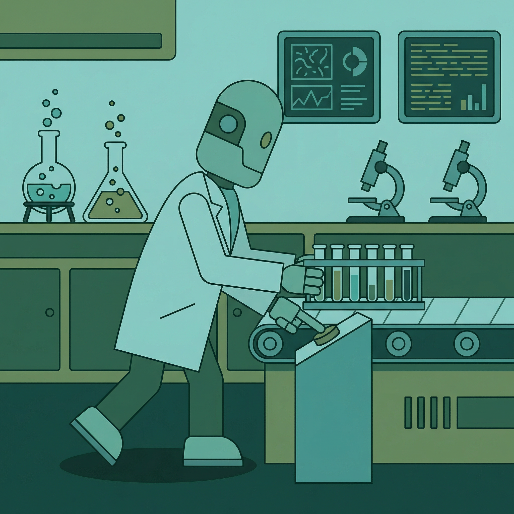
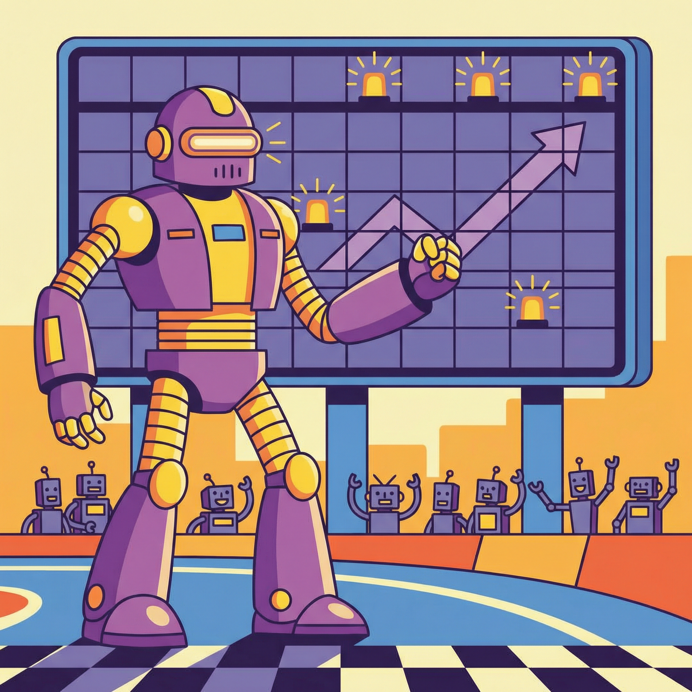
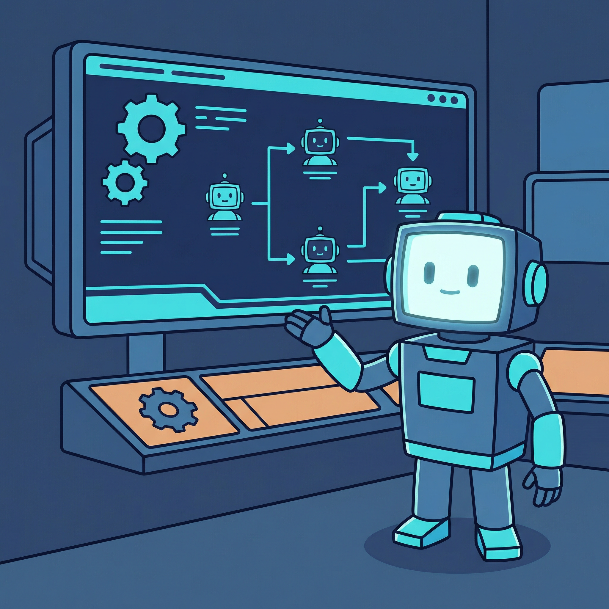
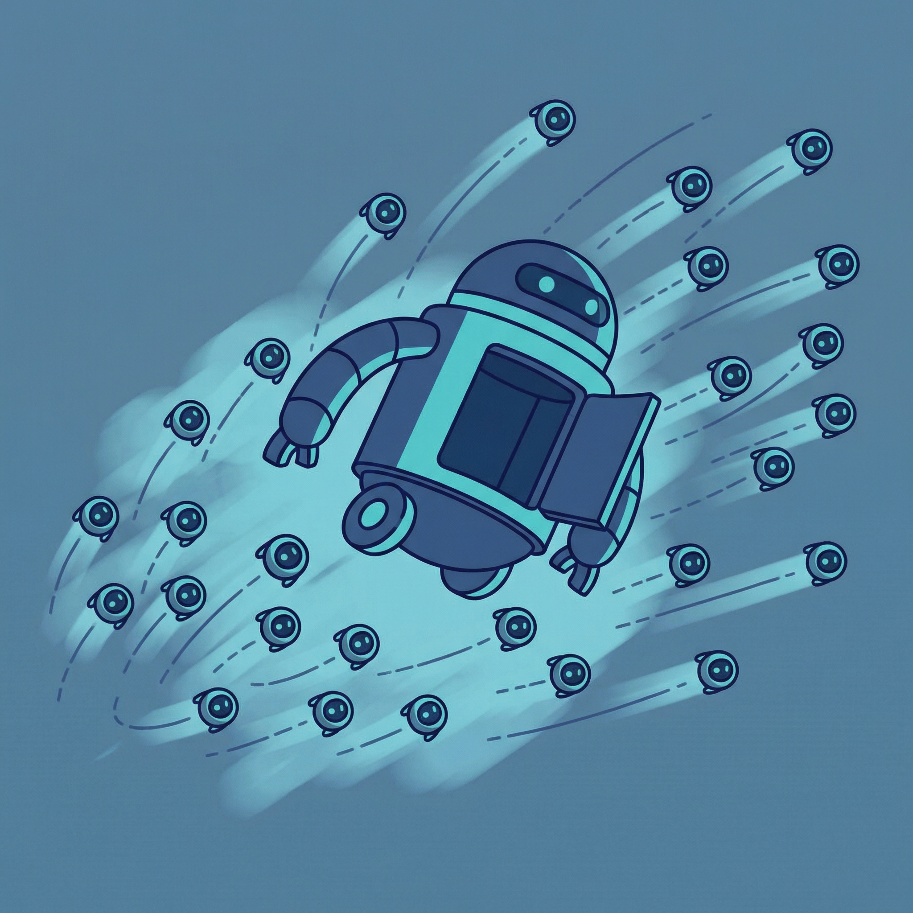
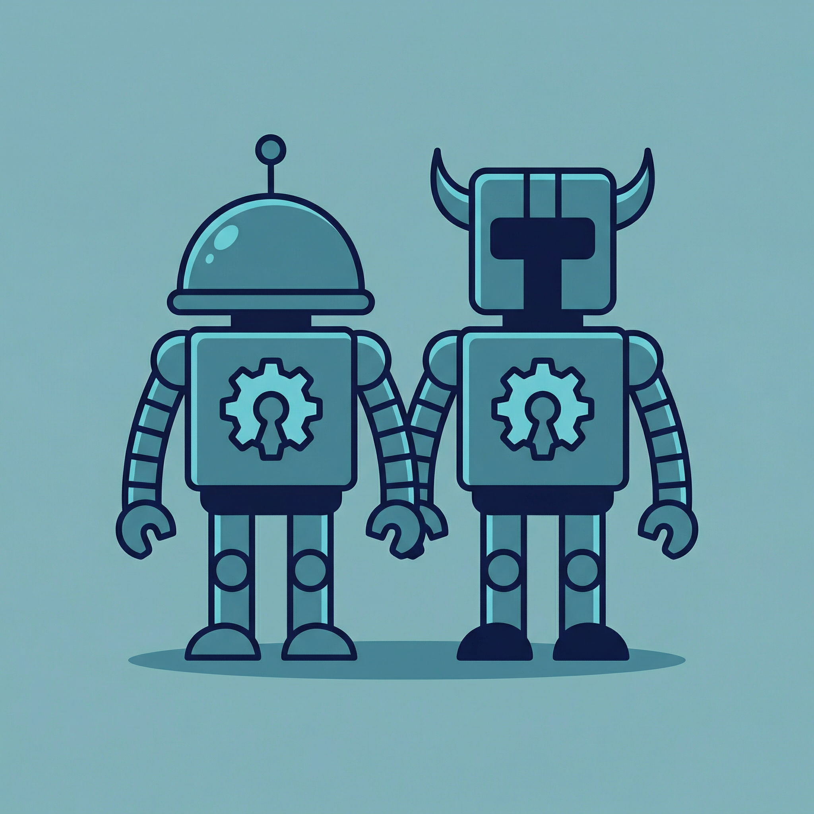

现象级
全球首条万台级人形机器人自动化产线在广东启用
来源：中山网 · 2026年04月12日
广东启用全球首条万台级人形机器人自动化产线，每30分钟下线一台。规模化量产后成本将大幅下降，人形机器人有望比预期更早进入仓库、零售门店及各类服务岗位，标志着具身智能从实验室走向大规模商业化生产。
查看原文 →全球首条万台级人形机器人产线启用，30分钟下线一台；Anthropic发布最强Claude Mythos暴击Opus 4.6；GLM-5.1开源登顶SWE-bench Pro全球第一；阿里云发布Agentic OS首个面向Agent的操作系统；MIT利用AI发现数百个新型CRISPR基因编辑工具。

广东启用全球首条万台级人形机器人自动化产线，每30分钟下线一台。规模化量产后成本将大幅下降，人形机器人有望比预期更早进入仓库、零售门店及各类服务岗位，标志着具身智能从实验室走向大规模商业化生产。
查看原文 →
2026年开年不到三个月，中国硬科技圈最疯狂的赛道就是具身智能。多家企业融资突破百亿估值，资本市场对人形机器人赛道的热情达到历史新高，具身智能正成为2026年最火热的科技投资方向。
查看原文 →
2026年被公认为全球人形机器人商业化元年。中国企业凭借供应链优势和规模效应，将人形机器人价格压缩到1万元级别，而美国同类产品仍高达25万元。成本差距正在重塑全球具身智能产业格局。
查看原文 →国产AI营销工具快速崛起，将内容策划周期从2周缩短至十几分钟。AI Agent接管营销全流程，从创意策划到物料生成再到精准投放一键完成，抖音上《大明天工合伙人》等AI生成短剧刷屏出圈。
查看原文 →SEO流量整体下滑30%，35%的Z世代消费者决策习惯向AI智能体倾斜。GEO（生成式引擎优化）正取代传统SEO成为品牌新战场，营销行业迎来从搜索排名到语义权重的范式转变。
查看原文 →天下秀发布2025年报，展现从流量驱动向AI技术驱动的跃迁。数字营销国家标准正式落地，AI Agent深度整合红人经济全链路，从达人匹配、内容生成到效果分析全面智能化，红人经济进入AI新时代。
查看原文 →
DeepMind创始人Hassabis旗下Isomorphic Labs正在用AI自动化药物设计流程，目前已有19个药物管线在推进，覆盖癌症、心血管等重大疾病。AI药物研发从辅助分析进化为端到端自动化设计，制药行业格局将被重塑。
查看原文 →
MIT团队利用AI系统在几分钟内从细菌基因组中挖掘出数百个潜在的CRISPR样蛋白，传统方法需要数周或数月。这一突破为基因编辑工具箱带来了大量新候选，有望催生下一代精准基因编辑技术。
查看原文 →
AI正在快速获得自主设计和运行生物实验的能力，但现有的治理体系尚未跟上这一速度。研究呼吁建立更严格的AI生物安全监管框架，在释放AI加速科学发现的巨大潜力的同时，防范潜在的生物安全风险。
查看原文 →• AlphaFold3 - DeepMind蛋白质结构预测，支持配体和核酸复合物建模 GitHub
• ESM-2 - Meta蛋白质语言模型，650M参数，序列分析利器 GitHub | HuggingFace
• RFdiffusion - 蛋白质结构生成扩散模型，从头设计蛋白质 GitHub
• OpenCRISPR-1 - AI设计的基因编辑器，开源可商用 GitHub

Anthropic深夜发布Claude Mythos Preview，性能全面超越此前榜首的Claude Opus 4.6，在多项基准测试中登顶。该模型可快速识别并利用已有系统的安全漏洞，展现出前所未有的推理与安全分析能力。
查看原文 →智谱发布GLM-5.1开源模型，SWE-bench Pro（最难工程基准）全球第一，超越GPT-5.4和Claude Opus 4.6。三大代码评测综合排名第一，可独立持续工作超过8小时，标志着开源模型在软件工程能力上的重大突破。
查看原文 →Meta旗下超级智能实验室（MSL）发布多模态推理模型Muse Spark系列，支持文本、图像、视频和音频的多模态理解与生成。虽然综合能力仍落后于第一梯队，但在特定多模态任务上表现亮眼，Meta持续加码大模型赛道。
查看原文 →
阿里云发布首款专为AI Agent设计的操作系统Agentic OS。未来的操作系统用户主体将从人类转变为Agent，该系统提供Agent生命周期管理、资源调度和安全隔离能力，为Agent大规模部署提供底层基础设施。
查看原文 →
Anthropic推出Claude管理智能体（Managed Agent），提供可组合的API套件和完全托管的运行环境。开发者无需处理底层基础设施，AI具备长期执行任务的能力，Agent构建和部署速度提升10倍，大幅降低企业AI落地门槛。
查看原文 →
当OpenClaw以20万+ GitHub Stars席卷开发者社区时，Nous Research推出的Hermes Agent正在用另一种方式挑战AI Agent生态。两者代表了不同的开源设计哲学——一体化平台 vs 模块化框架，为开发者提供了更多选择。
查看原文 →• OpenClaw - 最火热的开源AI Agent框架，20万+ Stars GitHub
• Hermes Agent - Nous Research模块化AI Agent框架 GitHub | HuggingFace
• MetaGPT - 多智能体协作框架，模拟软件公司角色分工 GitHub
• Agentic OS - 阿里云开源Agent操作系统核心组件 GitHub